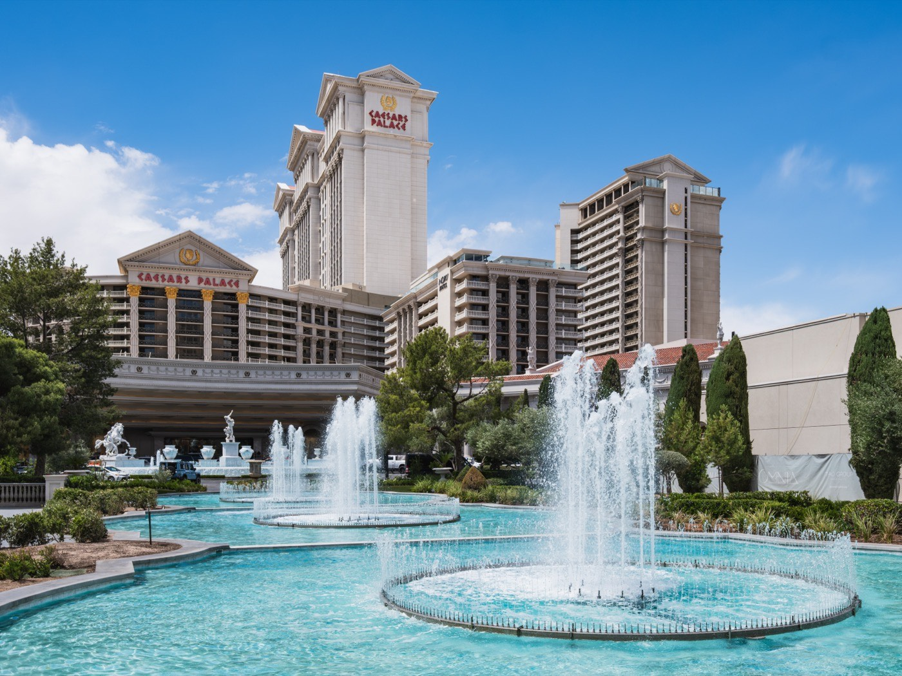

Executive Summary
이 글은 2026년 9월 말 사흘 사이에 나온 세 개의 문서를 나란히 놓고 읽는다. 9월 29일 로이터가 맥도날드의 가격 추천 엔진을 취재해 실었고, 10월 1일 맥도날드가 "AI는 맥도날드의 메뉴 가격을 정하지 않는다"는 반박문을 냈고, 10월 2일 일리노이 북부연방지법에 소비자 집단소송이 접수됐다. 셋이 같은 기계를 두고 서로 다른 말을 한다.
세 문서를 겹쳐 놓으면 다툼의 초점이 "누가 합의했나"가 아니라 "어떤 자료가 어디로 흘렀나"에 놓여 있다. 소장은 프랜차이즈 공개문서를 인용해, 본사가 가맹점에 자사 판매시점관리 시스템 사용을 의무화하고 거래 단위 기록을 본사 서버로 받으면서 가맹점끼리의 공개는 금지한다고 적는다. 그 두 조항을 묶어 소장이 내린 결론은 본사가 한 가맹점의 자료를 경쟁 가맹점의 가격에 닿게 할 수 있는 유일한 통로라는 것이다. 맥도날드는 그 도구가 권고를 줄 뿐 값을 정하지 않으며 사람이 최종 결정을 내린다고 반박했다.
여기까지가 세 문서가 적은 것이고, 여기서부터는 이 글이 그것을 데이터 파이프라인의 조건으로 읽은 해석이다. "남의 숫자를 모델에 어디까지 넣어도 되나"라는 질문에는 이미 숫자가 적힌 답이 있다. 그것도 세 번째 판본이다. 1996년에 미국 경쟁당국이 공동으로 적은 안전지대가 자료의 나이를 석 달로 적었고, 2023년에 두 기관이 기계학습의 발전을 이유로 그 안전지대를 거둬들였고, 2025년 임대주택 사건의 동의명령이 열두 달로 다시 적었다. 이 글은 엔진이 값을 올렸는지 내렸는지를 판정하지 않는다. 보는 것은 무엇이 모델에 들어갔는가다.
3개월 → 12개월
경쟁사 비공개 자료를 모델에 넣기 전 기다리라고 적힌 시간
1996년 미 법무부·연방거래위원회 공동 안전지대와 2025년 RealPage 동의명령의 값. 사이에 폐기가 한 번 있었다
95%
미국 맥도날드 매장 가운데 별개 법인이 소유·운영하는 비율
FY2025 10-K 기준 미국 매장 13,706개. 수평 담합은 경쟁자 사이에서만 성립한다
+28%
두 경쟁자가 모두 알고리즘 가격을 채택한 시장의 마진 상승폭
독일 주유소 실증. 한쪽만 채택한 시장에서는 유의한 변화가 없었다(Assad 외, JPE 2024)
약 90%
호텔들이 알고리즘 권고를 따랐다고 주장된 비율
Cornish-Adebiyi 사건. 거부·무효화 권한이 있었다는 사실은 각하 사유가 되지 않았다
사흘 사이에 나온 세 문서
2026년 9월 29일 로이터가 "Inside McDonald's push to have AI price your Big Mac"를 실었다. 기사는 취재 방법을 본문에 밝힌다. 가맹점주가 쓰는 가격 엔진 화면을 8월에 찍은 스크린샷으로 검토했고, 이 전략을 직접 아는 취재원 아홉 명을 인터뷰했다는 것이다. 기사의 요지는 맥도날드가 기계학습 알고리즘으로 미국 내 1만 4천여 매장의 일일 거래 수백만 건을 계속 분석해 매장별·품목별로 회사가 "최적 가격"이라 부르는 값을 만든다는 것이고, 화면에는 "Your restaurant is showing MEDIUM SENSITIVITY to Price"(이 매장은 가격에 중간 정도로 민감하게 반응한다) 같은 메시지가 뜬다.
이틀 뒤인 10월 1일, 맥도날드가 "Separating Fact from Fiction: AI Does Not Set Prices at McDonald's"라는 제목의 문서를 자사 사이트에 올렸다. 소문과 사실을 여섯 쌍으로 짝지어 반박하는 형식이고, 맺음말은 한 문장이다.
"AI는 맥도날드의 메뉴 가격을 정하지 않는다. 사람이 정한다." 원문: "AI does not set McDonald's menu prices. People do." (McDonald's, 2026-10-01)
그 다음 날인 10월 2일, 일리노이 북부연방지법에 소비자 집단소송이 접수됐다. Thomas v. McDonald's USA, LLC, 사건번호 1:26-cv-12149이고 피고는 맥도날드 USA와 맥도날드 코퍼레이션 두 곳이다. 본문에 단락이 132개까지 매겨져 있고, 청구는 넷이다. 셔먼법 제1조 위반이 둘(가격 고정과 정보 교환), 일리노이 반독점법 위반이 하나, 일리노이 소비자사기·기만적 거래행위법 위반이 하나다. 배심 재판을 청구했다.

이 사건의 규모부터 짚는다. 맥도날드가 증권거래위원회에 낸 FY2025 연차보고서 기준으로 미국 매장은 13,706개이고, 그중 95%를 본사가 소유하지 않은 별개 법인이 소유·운영한다. 한 엔진이 권고를 보내는 상대가 그만큼이고, 수평 담합은 경쟁자 사이에서만 성립하므로 그 95%라는 비율이 이 소송의 출발 조건이다.
세 문서의 순서가 중요하다. 소장은 사실관계의 뼈대를 로이터 기사에서 가져왔고, 그 사실을 스스로 적는다. 소장 ¶79는 맥도날드가 가격 결정에 이 도구를 쓴다는 사실이 "로이터가 2026년 9월 29일 그것을 설명하는 기사를 낼 때까지 널리 알려지지 않았다"고 적는다. 로이터 기사에 각주를 달아 인용한 단락이 ¶49·55·57·58·59·62·64로 여럿이다. 즉 이 사건의 출발점은 소장이 아니라 사흘 앞선 취재다. 이 글이 소장·로이터 기사·반박문 세 문서의 원문을 각각 열어 놓고 읽는 이유가 거기에 있다.
아래 타임라인은 세 문서가 나오기까지의 자취다. 2019년 인수부터 2026년 1월 기준 변경까지는 배경이고, 굵게 표시한 열흘이 이 글이 읽는 구간이다.
자료: 로이터(2026-09-29), 맥도날드 반박문(2026-10-01), Thomas v. McDonald's USA, LLC 소장(2026-10-02) 및 소장이 인용한 공개 문서.
1.1이 소송과 섞이기 쉬운 사건이 둘 있다
2023년에 화제가 된 18달러짜리 빅맥 세트는 이번 소송의 원고가 든 사례가 아니다. 그 가격을 붙인 코네티컷 가맹점주 조지 미첼은 2024년 5월 9일 뉴욕 동부연방지법에 본사를 상대로 따로 소송을 냈고, 그 가격이 "업계 표준 자문"의 권고였다고 주장했다. 소비자가 본사를 상대로 낸 이번 소송과 가맹점주가 본사를 상대로 낸 그 소송은 방향이 반대다. 로이터는 그 도구가 미첼에게 무엇을 권고했는지는 독자적으로 확인하지 못했다고 적었고, 맥도날드는 미첼이 가맹 계약을 반복해 위반했다고 반박하며 소송 내용을 다퉈 왔다.
이름이 비슷해 섞이기 쉬운 사건이 하나 더 있다. 같은 회사를 상대로 한 Deslandes v. McDonald's USA, LLC는 가맹점 사이의 직원 채용 금지 조항을 다툰 사건이고, 이번 가격 소송과는 완전히 별개다. 다만 두 사건이 같은 제7연방항소법원 관할에 있다는 점은 4절에서 다시 나온다.
소장은 공개문서 세 조항을 한자리에 놓는다
소장에서 가장 센 대목은 알고리즘을 설명한 부분이 아니다. 프랜차이즈 공개문서(FDD)의 조항 셋을 ¶50과 ¶51 두 단락에 나란히 옮겨 적은 자리다. 전송 의무가 하나, 본사의 무제한 접근이 하나, 가맹점끼리의 공개 금지가 하나다. 소장이 인용한 FDD에 따르면 가맹점은 본사가 소유한 판매시점관리 시스템을 쓰도록 요구받고, 그 시스템이 만든 거래 단위 기록은 본사 서버로 간다. 앞의 두 조항이 한 문장에 들어 있다.
"매장의 판매시점관리 시스템이 만든 거래 단위 정보는 매출·거래·상품 구성 정보를 포함해 귀하의 서버 하드웨어에 저장되고 맥도날드로 전송되어 맥도날드의 서버에 보관된다. 맥도날드는 이 정보에 독립적으로 접근할 수 있으며 그 접근 권한에 계약상 제한은 없다." 원문(소장 ¶50이 FDD를 인용): "The restaurant's transaction-level information generated by the POS, including sales, transactions, and product mix information, is stored on your server hardware and transmitted to McDonald's and held on its servers. McDonald's has independent access to this information and there are no contractual limits on its right to access such information."
셋째 조항은 방향이 반대다. 소장 ¶51은 가맹점이 맥도날드의 승인 없이는 자기 매출 자료를 다른 누구에게도 공개할 수 없다고 적는다. 모바일 앱 주문 기록도 같고, 가맹점은 매달 손익계산서를 본사에 낸다. 수집을 의무화하는 조항과 횡적 공개를 막는 조항이 한 문서 안에 함께 있는 셈이고, 소장은 그 둘을 묶어 한 문장으로 맺는다.
"달리 말하면, 맥도날드는 한 가맹점의 자료가 경쟁자의 가격에 영향을 줄 수 있는 유일한 통로다." 원문(소장 ¶51): "In other words, McDonald's is the only channel through which one franchisee's data can inform a rival's price."
이것은 알고리즘에 대한 추론이 아니라 계약 조항에 대한 읽기다. 데이터를 가운데로 모이게 만든 것이 무엇인지 묻는다면 소장의 답은 모델이 아니라 문서에 적힌 조항이다. 다만 두 가지는 분명히 해 둔다. FDD 원문은 이 글이 직접 열어 확인하지 못했고 위 축자는 소장이 인용한 것이다. 그리고 "유일한 통로"는 법원이 인정한 사실이 아니라 원고 측이 적은 문장이다.
아래 도식은 소장이 묘사한 자료의 경로다. 가는 길은 열려 있고 옆으로 가는 길은 막혀 있다는 구조를 한 장으로 보면 이 사건의 다툼이 어디에 놓여 있는지가 드러난다.
자료: Thomas v. McDonald's USA, LLC 소장 ¶50~53·107. 소장이 인용한 프랜차이즈 공개문서의 조항을 그림으로 옮긴 것이고, 법원이 인정한 사실관계가 아니다.
2.1문서에는 선택이라 적혀 있고, 운영에서는 사실상 의무다
같은 FDD가 "Pricing Engine" 이용 연회비를 안내하는데, 소장 ¶52는 그 요금이 문서에 선택 항목으로 적혀 있다는 점을 짚고 바로 뒤에 가맹점이 그것을 쓰도록 기대받는다고 적는다. 로이터는 여기에 한 줄을 더한다. 2026년 1월부터 맥도날드가 새 사업 기준의 하나로 가맹점에게 "맥도날드가 승인한 가격 컨설턴트와 도구에 건설적으로 참여"할 것을 요구하기 시작했다는 내부 공지를 확인했다는 것이다. 소장 ¶63·64는 그 기준과 함께, 본사가 권고에서 벗어난 정도를 상세히 기록한다는 로이터의 보도를 인용한다.
동의의 형식이 어떻게 작동하는지를 보여 주는 대목이라 데이터를 다루는 쪽에서 읽을 가치가 있다. 선택 항목으로 적힌 수집 동의가 평가 항목과 결합하면 실무에서는 다른 성격이 된다. 비슷한 구조를 데이터 제공 등급이 가격에 연동되는 사례에서 한 번 다룬 적이 있는데, 그쪽은 제공자가 등급을 고르는 구조였고 이쪽은 제공이 평가에 반영되는 구조다.
2.2본사가 인상을 원하는지를 두고 해석이 갈린다
본사가 어느 쪽을 원하는지에 대해 소장과 로이터는 같은 사실에서 반대 결론을 꺼낸다. 소장 ¶26은 맥도날드가 가맹점 매출의 4~5%를 로열티로 받고 광고분담금과 임대료도 매출에 연동된다고 적은 뒤, ¶11에서 "최적화된" 가격이 맥도날드의 수입을 늘린다고 쓴다. 로이터는 같은 구조를 반대로 읽는다. 본사는 개별 매장의 이익률과 무관하게 총매출의 일정 비율을 받으므로 손님을 더 불러 물량을 늘리는 인하를 원할 수 있고, 인건비와 임대료를 직접 지는 가맹점이야말로 인상 유인이 강하다는 것이다.
매출은 가격과 수량의 곱이다. 매출 연동 로열티라는 사실 하나만으로는 본사가 인상을 원한다고도 인하를 원한다고도 자동으로 말할 수 없다. 이 글은 둘 중 하나를 고르지 않는다. 두 해석을 그대로 둔다.
2.3약관이 위험을 먼저 적어 뒀다
로이터가 8월에 검토한 가격 포털의 이용약관에는 이용자들이 "서로 경쟁자일 수 있다"는 경고와 함께 반독점법을 충분히 이해하고 준수하라는 당부가 들어 있다. 같은 약관은 가맹점이 "최종 가격을 결정할 자유가 언제나 있다"고도 적는다. 전 연방거래위원회 위원 윌리엄 코바치치는 그 문구를 두고 로이터에 "문제가 될 소지가 있다는 것을 인정한 것"이라고 말했다. 맥도날드는 반독점 준수를 진지하게 여기며 약관의 그 안내가 반경쟁 행위의 증거는 아니라고 밝혔다. 소장 ¶59가 이 대목을 그대로 가져다 쓴다.
소장의 인용 부호 안에 맥도날드 자신의 문장이 들어 있다
소장 ¶30부터 ¶54까지를 이어 읽으면 인용 부호 안의 문장이 거의 다 맥도날드가 스스로 만든 문서에서 온 것임이 드러난다. 프랜차이즈 계약서, 공개문서, 규제기관에 낸 의견서, 투자자 행사 발표, 미국 증권거래위원회 제출 서류, 그리고 본사 대표가 낸 공개서한이다. 원고가 바깥에서 가져온 것은 로이터 기사와 다른 사건의 기록 정도다. 이 절은 그 문장들이 어떻게 두 방향으로 쓰이는지를 본다.
첫 번째 방향은 2026년 9월 23일 투자자 행사다. 소장이 인용한 바에 따르면 최고마케팅책임자 모건 플래틀리가 "메뉴 가격 엔진"을 "업계 선도 도구"로 소개하며 그것이 "매장과 품목 단위까지 내려가는 가격 권고"를 "수백만 건의 거래와 폭넓은 시장 자료에서 얻은 통찰에 근거해" 제공한다고 말했다. 같은 행사에서 최고정보책임자 브라이언 라이스는 도구가 "그것을 먹이는 데이터만큼만 좋다"고 한 뒤 이렇게 말했다고 소장은 적는다.
"표준 매장 데이터 레이크를 지었다. (…) 이것은 넘어설 수 없는 우위와, 경쟁자가 복제할 수 없는 지속적 학습 고리를 만든다." 원문(소장 ¶54가 인용): "built a standard restaurant data lake" capturing "billions of data points daily"; "This creates an insurmountable advantage and a continuous learning loop that competitors can't replicate." 이 글은 투자자 행사 녹취 원본을 직접 열지 못했고, 위 축자는 소장이 인용한 것이다.
로이터 기사가 나오기 엿새 전이다. 데이터 조직이 투자자 앞에서 자랑으로 쓰는 문장이 엿새 만에 반독점 소장의 인용 부호 안에 들어간 셈이다. 데이터를 모으는 일이 왜 우위인지를 설명하는 문장과, 그 모음이 왜 문제인지를 주장하는 문장이 같은 재료를 쓴다.
두 번째 방향이 더 흥미롭다. 소장이 가장 많이 인용한 것은 맥도날드가 책임을 피하려고 오랫동안 쌓아 온 독립성 문서다. 수평 담합은 경쟁자 사이에서만 성립하므로, 원고는 가맹점들이 서로 경쟁자라는 사실을 증명해야 한다. 그 증명에 쓰인 문장들이 전부 맥도날드 자신의 것이다.
소장은 그 증명을 맥도날드가 자기 손으로 적은 문서 셋과 운영 사실 하나에서 끌어온다. 표준 프랜차이즈 계약서, 프랜차이즈 공개문서, 2023년 연방거래위원회에 낸 공개의견서, 그리고 본사가 직영점으로 가맹점과 같은 상권에서 영업한다는 사실이다. 앞의 셋은 본사와 가맹점이 별개의 사업자라고 적은 문장이고, 소장은 그 문장들을 가맹점끼리 서로 경쟁자라는 요건에 그대로 쓴다. 마지막 하나는 본사도 그 경쟁자 가운데 하나라는 근거가 된다.
| 문서 | 맥도날드가 적은 문장 | 소장이 쓰는 방향 |
|---|---|---|
| 표준 프랜차이즈 계약서 (¶32) | 표제가 "Franchisee Not an Agent of McDonald's"이고, 가맹점을 "독립 계약자"로 규정한다 | 본사와 가맹점이 한 몸이 아니라는 근거 |
| 프랜차이즈 공개문서 (¶36) | "귀하는 독점 영업권을 받지 않는다. 다른 가맹점, 우리가 소유한 매장, 또는 우리가 통제하는 다른 유통 경로와 경쟁하게 될 수 있다" | 가맹점끼리 서로 경쟁한다는 근거 |
| 2023년 연방거래위원회 공개의견서 (¶38) | "어떤 프랜차이저는 가맹점에 독점 영업권을 주지만 맥도날드는 그러지 않는다. 이는 가맹점이 매장 품질을 높게 유지하도록 유인한다. 그러지 않으면 바로 인근의 다른 매장에 손님을 뺏기기 때문이다" | 경쟁이 설계된 것이라는 근거 |
| 직영점 운영 사실 (¶33) | 본사가 직접 소유·운영하는 매장이 가맹점과 같은 상권에서 영업한다 | 본사도 경쟁자의 하나라는 근거 |
자료: Thomas v. McDonald's USA, LLC 소장 ¶32·33·36·38. 한국어는 이 글이 옮긴 것이다.
같은 행사에서 플래틀리가 "가맹점이 독립적인 가격 결정에 대한 통제권을 유지한다"고 말했다고 소장 ¶44는 적는다. 2024년 5월 29일 맥도날드 USA 대표 조 얼링어의 공개서한도 같은 취지다. "미국 내 전체 매장의 95% 이상을 소유·운영하는 우리 가맹점들이 자기 매장의 메뉴 가격을 정한다"는 문장이다.
여기서 "그러니 회사가 거짓말을 했다"로 건너뛰면 사건을 잘못 읽는 것이다. 권고를 주는 일과 가격을 정하는 일은 다르고, 두 문장은 논리적으로 양립할 수 있다. 바로 그 양립 가능성이 이 사건의 실제 쟁점이다. 준수를 기록하고 갱신 심사에 반영하면서도 그것을 권고라 부를 수 있는지, 그 판단이 법원에 남아 있다.
한 목적으로 쌓은 문서가 다른 판단의 입력이 되는 구조는 데이터 쪽에서도 낯설지 않다. 페블러스 블로그에서 업무 기록을 사람의 기술 이력 추정에 쓰는 제품을 다룬 적이 있는데, 그쪽은 기록의 쓰임이 넓어지는 이야기였고 이쪽은 책임을 줄이려고 쓴 문장이 다른 법의 요건을 채우는 이야기다.
같은 소프트웨어를 두고 두 항소법원의 결론이 갈렸다
"명시적 합의 없이 알고리즘을 공유한 것만으로 담합이 되는가"는 아직 아무도 답하지 않은 질문이 아니다. 미국 법원은 2024년부터 2026년 사이에 같은 질문을 세 번 받았고 세 번 다 답했다. 먼저 용어 셋을 풀어 둔다. 바퀴살 구조(hub-and-spoke)는 가운데 한 사업자가 있고 서로 직접 만나지 않는 경쟁자들이 그 가운데를 거쳐 이어진 모양을 가리킨다. 그 자체로 위법(per se)은 효과를 따지지 않고 바로 위법으로 보는 유형이고, 합리의 원칙은 경쟁 제한 효과와 정당화 사유를 저울질해 판단하는 방식이다.
세 사건에서 쓰인 소프트웨어는 둘뿐이고, 그중 하나는 두 사건에 똑같이 등장한다. 그런데 결론이 갈렸다. 무엇이 달랐는지는 아래 표에 있다.
| 사건 | 법원·시기 | 결과 | 주장된 자료의 흐름 |
|---|---|---|---|
| Gibson v. Cendyn | 제9연방항소법원, 2025년 8월 | 각하 확정 | 원고가 한 호텔의 비공개 자료가 다른 호텔에 전달됐다는 주장을 하지 않았다. 바퀴살 구조 청구는 항소심에서 원고가 철회했다 |
| Cornish-Adebiyi v. Caesars | 제3연방항소법원, 2026년 7월 | 각하 파기, 청구 되살림 | 카지노들이 "현재의, 비공개 객실 가격·점유율 자료"를 계속 넣었다는 주장이 있었다 |
| Duffy v. Yardi | 워싱턴 서부연방지법, 2024년 12월 | 기각 신청 기각 | 비공개 자료가 섞였다는 주장. 법원은 그 자체로 위법 법리의 적용 가능성을 열어 뒀다 |
자료: 각 사건의 판결문. 세 사건 모두 서로 남인 경쟁사들이 제3의 공급자를 공유한 구조였다.
Gibson과 Cornish-Adebiyi에 등장하는 소프트웨어는 같은 회사의 같은 제품이다. 바뀐 것은 코드가 아니라 소장에 적힌 자료의 경로였다. 그리고 이번 소장이 가장 공들인 대목이 바로 그 경로다. ¶107은 "각 참여자가 자신의 현재의, 세밀한, 비공개, 매장·품목 단위 매출·가격 자료를 공통 엔진에 기여했다"고 적고 ¶51은 "유일한 통로"로 맺는다. 앞선 판결들을 읽고 소장을 자료 흐름의 서술로 다시 쓴 것이고, 변호사들이 그렇게 썼다는 사실 자체가 이 사건의 사실이다. 다만 이것은 소장의 주장이지 인정된 사실이 아니다. 기각 신청도 집단 인증도 아직 남아 있다.

4.1"권고일 뿐 강제가 아니다"는 방어선은 한 번 시험대에 올랐다
맥도날드 반박문의 중심 문장은 "권고는 그저 권고일 뿐 지시가 아니다"이다. 그런데 Cornish-Adebiyi에서 피고들이 선 자리가 바로 거기였다. 제3연방항소법원은 각 피고가 최종 가격 결정권을 쥐고 있었고 권고를 거부하거나 무효화할 수 있었다는 사실이 소장 각하 단계에서 청구를 깨지는 못한다고 봤다. 그 사건에서 호텔들이 권고를 따랐다고 주장된 비율은 약 90%였다. 같은 법원은 소프트웨어를 썼다는 사실만으로 위법이 되는 것은 아니라는 점도 함께 적었다.
사실관계도 관할도 다르므로 이 글은 "그러므로 맥도날드도 진다"고 적지 않는다. 남는 사실은 한 줄이다. 같은 모양의 방어선이 한 번 시험대에 올랐고 그때는 각하 사유로 받아들여지지 않았다.
4.2앞선 사건들과 다른 점은 가운데 선 쪽이 브랜드 본사라는 것이다
앞선 세 사건은 서로 남인 경쟁사들이 제3의 벤더를 공유한 구조였다. 이번 사건은 가운데 선 쪽이 브랜드 소유자이고, 자료 수집이 계약으로 의무화돼 있고, 그 소유자가 직영점으로 가맹점과 같은 상권에서 경쟁한다. 여기서 맥도날드에게 가장 그럴듯한 길은 단일기업 항변이다. 모회사와 완전자회사처럼 "목적의 단일성"이 있는 관계에서는 셔먼법 제1조가 말하는 공모 자체가 성립하지 않는다는 Copperweld(1984) 법리다.
그 선을 다시 그은 것이 American Needle(2010)이다. 어떤 합의가 제1조에 걸리려면 시장에서 독립적인 의사결정의 중심을 없애야 하고, 법적으로 하나인 실체의 구성원이라도 경쟁자들이 통제하는 통로로 쓰였다면 제1조가 적용될 수 있다는 것이다. 프랜차이즈에 이 법리를 정면으로 적용한 항소심이 Arrington v. Burger King(제11연방항소법원, 2022)이다. 1심은 본사와 가맹점들이 단일 경제 실체라며 각하했는데 항소심이 뒤집었고, 뒤집으면서 든 근거가 프랜차이즈 계약서 자신의 문구였다. 신인관계가 없다고 적혀 있고, 매장들이 서로 경쟁할 수 있다고 적혀 있다는 것이다. 3절의 표에 늘어놓은 문장들이 정확히 그 종류다.
반대쪽도 같은 무게로 적어 둔다. Arrington은 직원 채용을 다툰 노동시장 사건이지 가격 사건이 아니다. 가격에서는 프랜차이저의 권고가 전통적으로 수직 관계로 다뤄져 Leegin(2007) 이후 합리의 원칙을 받는다. 로이터가 실은 반대쪽 전문가 의견이 정확히 그 말이다. 경쟁자가 가맹점이라는 점 때문에 법적·규제적 위험이 낮고, 최근 수십 년간 법원이 브랜드가 가맹점 가격에 관여하는 데 넓은 재량을 줘 왔다는 것이다. 덧붙여, 이 소송이 걸린 제7연방항소법원은 같은 당사자를 두고 가맹점 사이 수평 합의 주장을 한 번 심리해 본 적이 있다. 다만 그 사건은 직원 채용 금지 조항을 다툰 것이라 주제가 다르다.
같은 종류의 미 법원 문서를 정독한 글로 미 정부가 AI 학습 공정이용을 변호한 의견서를 읽은 리포트가 있다. 그쪽은 저작권법이고 이쪽은 경쟁법이라 적용 법도 쟁점도 다르지만, 정부와 법원이 데이터의 어느 단계를 보는지를 문서로 확인한다는 점에서는 겹친다.
경쟁당국의 답은 이제 데이터 사양에 가깝다
"남의 숫자를 모델에 어디까지 넣어도 되나"는 이번 소송이 처음 던진 질문이 아니다. 미국 경쟁당국은 이 질문에 삼십 년 가까이 숫자로 답해 왔고, 그 답은 한 번 적혔다가 지워졌고 다시 적혔다. 처음 쓰인 것은 1996년이다. 미 법무부와 연방거래위원회가 함께 낸 의료 분야 반독점 집행 정책성명의 제6항이 자료 교환의 안전지대를 적었다.
안전지대의 조건은 넷이다. 제3자가 조사를 운영할 것, 교환되는 자료는 석 달 이상 지난 것일 것, 참여자가 다섯 곳 이상일 것, 개별 참여자를 알아볼 수 없게 집계하고 한 참여자가 한 통계의 25%를 넘지 않을 것. 이 조건을 다 지키면 집행 대상으로 삼지 않겠다는 약속이었다. 그 약속을 2023년에 두 기관이 거둬들였다. 법무부가 2월 3일에, 연방거래위원회가 7월에 철회했고, 든 사유가 기계학습과 데이터 분석의 발전이었다. 조건을 다 지킨 집계 자료라도 경쟁을 해칠 수 있다는 것이다.
세 번째 판본은 2025년 11월 24일 임대주택 가격 소프트웨어 사건에서 나왔다. 미 법무부가 RealPage와 합의하며 법원에 낸 제안 최종판결인데, 조항의 생김새가 법 문장이라기보다 데이터 사양에 가깝다.

그 사양이 먼저 적는 숫자가 열두 달이다. 모델 학습에 쓰는 경쟁사 비공개 자료는 그만큼 지난 것이라야 하고, 추천을 내는 시점에는 타사의 비공개 수치를 입력으로 쓰지 못한다. 지리 해상도는 전국 단위가 원칙이고, 집계했든 익명화했든 그 자료를 다른 이용자에게 보여 주지 못한다. 자동수락의 기본값에도 제한이 붙었다. 석 달과 열두 달 사이에 숫자가 지워진 구간이 하나 있는 셈이다. 세 판본을 나란히 놓으면 그 구간이 가운데에 선다.
자료: 미 법무부·연방거래위원회 Statements of Antitrust Enforcement Policy in Health Care(1996) 제6항, 법무부 정책성명 철회 발표(2023-02-03), United States v. RealPage, Inc. 제안 최종판결(2025-11-24 제출).
이 동의명령은 RealPage 한 회사를 구속하지 업계를 구속하지 않는다. 맥도날드에는 적용되지 않는다. 게다가 Tunney Act 심사 중인 제안 최종판결이다. 로펌들이 "더 안전한 알고리즘 가격 설계도"로 읽고 있다는 것은 사실이지만, 그렇게 읽힌다고 법적 기준이 되지는 않는다. 그리고 법무부가 알고리즘 가격 자체를 위법으로 봤다고 읽어서도 안 된다. 해설 다수가 오히려 반대로 읽는다.
5.1동의명령의 축에 소장의 묘사를 대 본다
아래 표의 왼쪽은 동의명령이 요구하는 것이고 오른쪽은 소장과 로이터가 묘사한 맥도날드 엔진이다. 다시 적어 두면 왼쪽은 다른 회사에 걸린 조건이고 오른쪽은 아직 다투는 중인 주장이다. 표는 두 쪽이 같은 축 위에서 어디에 놓이는지를 보여 줄 뿐이고, 위반 여부를 따지지는 않는다.
| 축 | 동의명령이 요구하는 것 | 소장·로이터가 묘사한 엔진 |
|---|---|---|
| 학습 자료의 나이 | "12개월 이상 지난 것"이고 진행 중인 계약의 자료는 제외 | "현재의, 세밀한, 비공개, 매장·품목 단위 매출·가격 자료"(¶107) · "일일 거래 수백만 건"(¶7) |
| 실행 시점 입력 | 추천을 내는 시점에 타사 비공개 자료 사용 중단 | 경쟁 가맹점의 비공개 자료로 "이 매장의 예상 손님이 가격에 얼마나 민감한지"를 산출(¶8) |
| 지리 해상도 | "전국 단위보다 더 구체적인" 단위 금지, 지정 모델 세 개만 주 단위까지 허용 | "매장과 품목 단위까지 내려가는 가격 권고"(¶53) |
| 경쟁자 조건화·기본값 | 자동수락 파라미터를 개별 설정, 상·하한을 대칭으로, 거부·무효화를 막지 말 것, 채택을 유인하지 말 것 | "30% 규칙" — 경쟁 매장이 이미 올렸는지에 인상이 걸린다(¶55·56) · 준수 여부를 기록해 갱신·확장 심사에 반영(¶10·64) |
| 타 이용자 노출 | "형태·집계·익명화·나이를 불문하고" 타 이용자에게 노출 금지 | 본사가 유일한 통로로서 한 가맹점의 자료를 경쟁 가맹점의 가격에 닿게 한다는 주장(¶51) |
| 시장조사 수집 | 시장조사를 통한 비공개 자료 취득 금지 | 대응하는 서술이 소장에도 로이터 기사에도 없다 |
| 감독 | 감시인 3년(연장 가능), 판결 자체는 7년 만료 | 해당 없음 |
자료: United States v. RealPage, Inc. 제안 최종판결 IV·V·VII·XIII조, Thomas v. McDonald's USA, LLC 소장, 로이터(2026-09-29). 빈칸은 채우지 않고 그대로 뒀다.
반대 방향의 사실도 같은 자리에 둔다. 로이터에 따르면 가격 포털이 끌어오는 웬디스·버거킹 같은 타사 가격은 온라인 메뉴에서 가져온 공개 정보다. 동의명령이 허용하는 쪽에 해당한다. 그리고 권고의 주기는 회사 문서 기준으로 연 3회 이상이다. 실시간이 아니다. 30% 규칙의 축자도 소장보다 로이터 쪽이 길다. 로이터가 두 전직 직원에게 들은 파라미터 예시는 "최근 30% 이상의 매장에서 가격이 오른 품목에 한해서만 인상"이라는 문턱 조건에 가깝게 적혀 있고, 소장 ¶56은 같은 규칙을 "한 가맹점이 인상을 권고받는지가 경쟁자가 이미 올렸는지에 달려 있다"로 되받는다. 두 서술은 양립한다. 어느 쪽으로 읽든 한 매장의 권고가 경쟁 매장들의 행동에 걸려 있다는 점은 같다.
5.2그 축들에는 경제학 근거가 있다. 다만 면책 조건은 아니다
동의명령의 조건이 임의로 그어진 선인지를 따져 볼 만하다. 조사해 보면 여러 축에 대응하는 실증과 이론이 있다. 공동 채택 축에서는 독일 주유소 시장을 다룬 연구가 가장 분명하다. 두 경쟁자가 모두 알고리즘 가격을 채택한 복점 시장에서 마진이 약 28% 올랐고, 한쪽만 채택한 시장에서는 유의한 변화가 없었다. 식별 가능성과 집계 수준에 관한 권고는 1995년 이래의 정보교환 문헌에 뿌리를 둔다. 신선도와 빈도 축에서는 호주 연료 소매 사례가 자주 인용된다. 주유소별 가격이 15~30분 단위로 공유되자 인상이 도미노처럼 번졌다는 관찰이다. 투명성 자체의 효과로는 경제협력개발기구가 표준 예로 드는 덴마크 레미콘 사례가 있다. 정부가 업체별 실거래가를 공표하자 1년 안에 평균가가 15~20% 올랐다.
그런데 같은 문헌이 반대쪽도 말한다. 익명화가 담합을 막지 못할 수 있다는 분석이 있고, 집계 자료라도 경쟁자의 행동을 충분히 정밀하게 추론할 수 있으면 담합을 지탱한다는 이론이 있다. 1996년 안전지대가 폐기된 사유와 같은 말이다. 신선도와 실행 시점 입력과 해상도와 기본값, 이 네 축은 점검 목록이지 면책 조건이 아니다. 지켰다고 안전해지는 것이 아니다.
5.3한국은 같은 질문을 조문으로 적어 뒀다
미국이 판례와 동의명령으로 다투는 질문을 한국은 2021년에 법 조문으로 적었다. 공정거래법 제40조 제1항 제9호가 가격·생산량 등의 정보를 주고받아 경쟁을 실질적으로 제한하는 행위를 부당공동행위의 한 유형으로 신설했고, 같은 조 제5항 제2호는 외형상 일치를 만들 정보를 주고받았으면 합의를 추정한다. 시행령 제44조 제2항이 대상 정보를 셋으로 적는데, 원가, 출고량·재고량·판매량, 그리고 거래조건·대금 지급조건이다. 동반 행정규칙으로 사업자 간 정보교환이 개입된 부당한 공동행위 심사지침이 있고, 공동행위 심사기준의 안전지대는 점유율 20%다.
조문이 이름으로 부르는 정보가 하필 판매량과 거래조건이다. 소장이 맥도날드 엔진에 들어갔다고 적은 바로 그 종류다. 다만 알고리즘을 매개로 한 간접 교환에 대한 구체적 심사기준은 이번 조사에서 확인되지 않았다. 거기까지만 적고 멈춘다.
부인한 것과 주장한 것이 같지 않다
10월 1일 반박문은 소문과 사실을 여섯 쌍으로 짝지어 적는다. 그 여섯 쌍을 소장의 주장과 하나씩 맞대 보면, 양쪽이 서로 다른 것을 말하는 칸과 실제로 부딪치는 칸이 갈린다. 아래 표가 그 대조다.
| 맥도날드가 부인한 것 | 소장이 주장한 것 | 대조 |
|---|---|---|
| "AI는 빅맥이나 다른 어떤 메뉴의 가격도 정하지 않는다" · "도구는 정보를 준다. 최종 가격 결정은 사람이 한다" | 엔진이 매장·품목 단위 권고를 내고 준수 여부가 추적된다(¶53·57) | 실제 다툼 — 권고인가 사실상 강제인가 |
| "개별 고객의 지불 의사에 근거해 가격을 정하지 않으며, 개별 고객을 위한 가격을 정하지 않는다" | 개별 고객 타깃팅을 주장한 적이 없다. 주장은 매장 단위 차등이다 | 서로 다른 것을 말한다 |
| "실시간으로도, 하루 중 시간대별로도 가격을 바꾸지 않는다" | 시간축 변동을 주장한 적이 없다. 로이터도 권고 주기를 연 3회 이상이라 적는다 | 서로 다른 것을 말한다 |
| "자료와 분석으로 가격 결정을 뒷받침하는 일은 표준적인 사업 관행이다" · "몇 마일 떨어진 매장도 지역 시장 조건이 다를 수 있다" | 프레즈노의 두 직영점이 2마일(약 3.2km) 거리에서 빅맥을 각각 5.69달러와 6.89달러에 판다(로이터) | 같은 거리를 두고 반대로 읽는다 |
| "가맹점이 독립적으로 메뉴 가격을 정한다" · "권고는 그저 권고일 뿐 지시가 아니다" | 준수 여부가 기록돼 갱신·확장 심사에 반영된다(¶10·64). 최고경영자가 투자자에게 "가격 비준수"를 언급했다(¶65) | 실제 다툼의 다른 얼굴 |
| "가맹점 가치 기준은 가격을 단속하는 장치가 아니다. 평가는 전체적이고 가격은 여러 고려 사항 중 하나다" | 2026년 1월부터 "승인된 가격 컨설턴트와 도구에 건설적으로 참여"할 것이 요구된다(¶63) | 평가의 성격을 두고 갈린다 |
자료: McDonald's, Separating Fact from Fiction(2026-10-01) 전문과 Thomas v. McDonald's USA, LLC 소장. 왼쪽 열의 한국어는 이 글이 옮긴 것이다.
네 번째 행이 좋은 세부다. 로이터가 든 예시는 "2마일 떨어진 두 매장"이고 회사의 답은 "몇 마일 떨어진 매장도 조건이 다를 수 있다"이다. 같은 거리를 두고 한쪽은 이상하다 하고 한쪽은 당연하다 한다. 다만 두 가지를 같은 자리에 적어 둔다. 로이터는 그 가격 차이가 엔진의 권고 때문인지 다른 요인 때문인지 확인하지 못했다고 명시했다. 그리고 그 두 매장은 모두 본사가 직접 운영하는 직영점이라, 가맹점 자율성 논쟁에서는 한 걸음 비껴 있는 예시다.

6.1반박문의 부인 목록에 입력 자료가 없다
반박문 여섯 쌍을 끝까지 읽어도 그 도구가 어떤 자료를 입력으로 쓰는지는 나오지 않는다. 가장 가까운 문장이 두 번째 쌍에 있다.
"그 도구는 지리적 위치와 그 밖의 조건에 따라 달라지는 매장 수준의 시장 역학에 초점을 맞춘다." 원문: "The tool focuses on restaurant level market dynamics that change by geographic location and other conditions." (McDonald's, 2026-10-01)
소장의 핵심 주장은 "여러 가맹점의 현재 비공개 자료를 한 엔진에 모았다"이고, 그 항목은 반박문의 부인 목록에 없다. 다루지 않은 것이 곧 인정은 아니다. 회사가 답할 의무가 있는 자리도 아니다. 적을 수 있는 사실은 하나뿐이다. 양쪽이 각자 자기 말에서는 맞는데, 입력 자료라는 칸에서는 한쪽만 말하고 있다. 이 글이 보는 자리가 정확히 거기다.
6.2엔진이 값을 올렸는지 내렸는지는 이 글이 판정하지 않는다
소장이 뼈대를 가져온 그 기사에 소장이 가져가지 않은 문단이 있다. 로이터는 일부 가맹점주가 팬데믹과 그 직후 물가가 치솟던 시기에 엔진이 큰 폭의 인상을 권고했다고 말했다고 적은 뒤, 바로 이어서 이렇게 쓴다.
"그러나 최근 몇 달 사이 엔진은 더 보수적인 가격을 밀었고, 인하도 일부 포함돼 가맹점과 본사 사이에 마찰을 낳았다." 원문: "But in recent months the engine has pushed more conservative pricing – including some decreases – causing friction between franchisees and corporate headquarters." 같은 기사의 다른 문단은 그 방향을 "소비자 친화적"이라 적는다. (Reuters, 2026-09-29)
소장은 같은 엔진이 초경쟁 가격을 만들었다고 주장한다. 둘 다 같은 기사를 출처로 삼는데 결론이 반대다. 이 글은 어느 쪽 편도 들지 않고 두 읽기를 나란히 둔다. 쟁점은 엔진이 어느 방향으로 밀었는가가 아니라 무엇이 엔진에 들어갔는가이기 때문이다. 자료 교환이 문제가 되는 법리에서는 가격이 올랐는지 내렸는지가 자동으로 결론을 정하지 않는다.
같은 이유로 자주 인용되는 두 수치도 따로 떼어 둔다. 2019년부터 2024년 사이 미국 평균 메뉴 가격이 약 40% 올랐다는 값은 맥도날드가 2024년 5월 29일 자기 팩트시트에 적은 것이고, 회사는 그 상승을 비용 때문이라 설명했다. 같은 기간 외식업 매장 비용이 36% 올랐다는 값은 전미레스토랑협회 추정으로 로이터가 인용한 것이다. 두 수치는 센 대상도 출처도 달라 서로 맞대어 빼거나 나눌 수 없다. 같은 기간에 일어난 일이라는 것까지가 공통 사실이다. 비율 앞에서 무엇의 비율인지를 먼저 묻는 연습은 투자사 시장 자료의 차트를 원자료까지 거슬러 읽은 리포트에서 한 번 해 봤다.
6.3아직 아무것도 정해지지 않았다
이 사건은 소장이 접수된 단계다. 피고의 기각 신청도, 집단 인증도, 단일기업 항변에 대한 판단도 아직 나오지 않았다. 4절에서 본 대로 같은 종류의 주장이 한 항소법원에서는 각하되고 다른 항소법원에서는 되살아났으므로, 결과를 예측하는 일은 이 글의 몫이 아니다. 대신 법원이 앞으로 묻게 될 질문은 비교적 또렷하다. 권고에 준수 기록과 갱신 심사가 따라붙을 때 그것이 여전히 권고인가, 그리고 경쟁 관계인 당사자들의 현재 비공개 자료가 한 모델로 모이는 일 자체가 정보 교환인가. 두 질문 모두 데이터 쪽 사실에서 답이 갈린다.
페블러스 관심의 이유
먼저 이해관계를 밝힌다. 페블러스는 이 사건의 당사자와 아무 관계가 없다. 그러나 페블러스 역시 여러 고객사의 데이터를 같은 파이프라인과 같은 도구로 다루고, 아래에 적는 네 축 점검을 정식 절차로 두고 있지 않다. 남의 이야기가 아니라 우리도 대 봐야 하는 항목이라 적고 간다.
값이 아닌 항목 하나가 검사 목록에 빠져 있다
페블러스가 DataClinic과 AI-Ready Data에서 하는 일은 모델에 들어가기 전의 데이터를 검사하는 일이다. 검사 항목은 대개 값에 관한 것이다. 결측, 중복, 분포, 라벨 일관성. 그 목록에는 값이 아닌 항목이 하나 더 있어야 한다. 이 행은 누구의 것이고, 그 사람은 모델의 출력을 받는 다른 사람과 어떤 관계인가.
소장이 묘사한 엔진에 들어간 매출 기록은 품질이 나쁘지 않다. 판매시점관리 시스템에서 바로 올라온 거래 단위 기록이라 오히려 깨끗하다. 문제는 그 행의 주인들끼리 서로 경쟁자라는 것이고, 그건 데이터 자체를 아무리 들여다봐도 안 보인다. 결측률도 분포도 그 사실을 알려 주지 않는다.
품질 지표로 재던 것들이 그대로 법적 경계선이 됐다
5절에서 본 세 판본의 조건을 다시 늘어놓아 보면 목록이 익숙하다. 자료의 나이, 집계 수준, 식별 가능성, 제3자 운영 여부, 그리고 2025년에 더해진 실행 시점 입력 분리와 지리 해상도. 전부 데이터 파이프라인의 속성이다. 데이터 품질 쪽에서 신선도와 해상도와 계보라 부르며 재던 것들이 경쟁당국의 조문에 그대로 들어가 있다.
그 안전지대가 2023년에 폐기된 사유가 기계학습이었다는 사실이 이 절의 핵심이다. 집계하고 익명화해도 모델이 복원할 수 있다면 집계는 더 이상 방패가 아니라는 것인데, 경제학 문헌도 같은 말을 한다. 뒤집으면 이렇게 된다. 데이터 계보를 기록해 두지 않은 조직은 이 선을 지켰다는 것을 증명할 방법이 없다. 지켰는지 아닌지가 아니라 증명할 수 없다는 것이 문제다. 학습 데이터의 출처를 분리해 두지 않으면 감사에서 걸린다는 이야기를 한 번 다룬 적이 있는데, 그쪽은 감사의 문제였고 이쪽은 증명 책임의 문제다.
당장 할 수 있는 일이 셋 있다
첫째, 지금 운영하는 모델의 학습 데이터에 서로 경쟁 관계인 둘 이상의 당사자가 들어 있는지 센다. 고객사별로 모델을 따로 두면 해당이 없고, 여러 고객사를 하나의 공통 모델에 태우면 해당된다. 이 확인이 먼저인 이유는, 나머지 두 가지가 전부 여기서 갈리기 때문이다.
둘째, 해당된다면 5절에서 본 네 축에 비춰 본다. 입력이 얼마나 최신인가, 추천을 내는 시점에 남의 비공개 수치가 들어가는가, 지리와 개체의 해상도가 얼마나 낮은가, 산출물의 기본값이 한쪽으로 기우는가. 다시 적지만 이 네 축은 점검 목록이지 면책 조건이 아니다. 넷을 다 지켜도 안전이 보장되지는 않고, 다만 무엇을 어떻게 했는지 설명할 수 있게 된다.
셋째, 계약서를 다시 읽는다. 데이터 수집 조항과 비공개 조항이 함께 들어 있으면, 그 둘이 우리를 유일한 통로로 만들고 있지 않은지 본다. 소장이 가장 세게 때린 곳이 그 두 조항의 결합이다. 비공개 조항 자체는 흔히 보호 장치로 들어가는데, 수집 조항과 짝이 되면 성격이 달라진다. 숫자를 내놓겠다는 약속과 그 숫자를 누가 검증할 수 있게 할지를 함께 봐야 한다는 점에서는 비밀유지계약을 접고 수치를 공개하겠다는 발표를 읽을 때와 같은 종류의 독법이 필요하다.
데이터의 품질과 데이터의 자격은 다른 검사다
학습 데이터의 출처를 따지는 일은 지금까지 주로 저작권 문제로 다뤄졌다. 누구 글을 긁었나, 라이선스가 있나. 페블러스 블로그에서도 학습이 아니라 데이터를 어디서 구했는지가 책임이 된 사건을 다룬 적이 있다. 그 글은 저작권법에서 데이터의 취득 경로가 책임이 된 사건이고, 이 글은 경쟁법에서 데이터의 합류 지점이 책임이 되는 사건이다.
이 사건이 여는 질문은 그래서 다르다. 출처가 누구인지가 아니라 출처들끼리 어떤 사이인지를 묻는다. 같은 자료라도 제공자들이 서로 남이면 괜찮고 서로 경쟁자면 다른 법이 따라붙는다. 그리고 그 판단은 데이터 엔지니어링 쪽에서 내릴 수 없다. 조직도와 계약서를 봐야 나온다. 페블러스가 한국어로 먼저 언어화할 수 있는 것은 이 구분이다. 데이터의 품질과 데이터의 자격은 다른 검사이고, 둘째 검사는 아직 어느 도구에도 들어 있지 않다.
본문의 축자 인용은 소장 원문(Thomas v. McDonald's USA, LLC, 1:26-cv-12149), 로이터 2026년 9월 29일 기사 전문, 맥도날드 2026년 10월 1일 반박문 전문, 이 셋에서 직접 가져왔다. 2차 보도의 재인용은 쓰지 않았다. 직접 열지 못한 문서도 적어 둔다. 프랜차이즈 공개문서 원본, 9월 23일 투자자 행사 녹취 원본, 법무부가 다른 사건에서 낸 의견서 원문은 확보하지 못해 소장이 인용한 범위 안에서만 썼고, 본문에 그렇게 밝혔다. 소장에만 있고 로이터 전문에서 확인되지 않은 업체 이름 하나는 본문에서 뺐다. 1절부터 6절까지는 세 문서가 적은 것이고, 5절 뒷부분의 해석과 이 절은 그 문서들이 하지 않은 이야기이니 나눠서 읽어 주시기 바란다. 진행 중인 소송이라 이 글은 결과를 예측하지 않는다. 긴 글 읽어 주셔서 감사하다.
참고문헌
이 글의 대상 — 1차
- 1.Thomas v. McDonald's USA, LLC, No. 1:26-cv-12149 (N.D. Ill., filed Oct. 2, 2026), Complaint. 단락 ¶1~132. 본문의 소장 축자는 전부 이 원문에서 가져왔다.
- 2.Waylon Cunningham, "Inside McDonald's push to have AI price your Big Mac", Reuters, 2026-09-29. 30% 규칙 파라미터, MEDIUM SENSITIVITY 화면 문구, 포털 약관, 코바치치 인용, 킹 인용, 프레즈노 가격 비교, 36%, Tiger Analytics, 최근 인하 방향 문단까지 전문으로 확인했다.
- 3.McDonald's, "Separating Fact from Fiction: AI Does Not Set Prices at McDonald's", 2026-10-01. FICTION/FACT 여섯 쌍 전문. 함께 공개된 요약본 포함.
판례·정부 문서 — 1차
- 4.United States v. RealPage, Inc., No. 1:24-cv-00710 (M.D.N.C.), Proposed Final Judgment, ECF 159-1, filed Nov. 24, 2025. 12개월 조항(IV.A.3), 실행 시점 입력(IV.A.1), 지리 해상도(IV.A.5), 타 이용자 노출 금지(IV.B), 시장조사 수집 금지(IV.D), 자동수락·채택 유인(V), 감시인 3년(VII.N), 7년 만료(XIII).
- 5.Cornish-Adebiyi v. Caesars Entertainment, Inc., No. 24-3006 (3d Cir. July 29, 2026) (precedential). 현재의 비공개 자료 서술, 약 90% 채택률, 거부·무효화 권한이 각하 사유가 되지 않는다는 판시.
- 6.Gibson v. Cendyn Group, LLC, 148 F.4th 1069 (9th Cir. Aug. 15, 2025) · Duffy v. Yardi Systems, Inc., No. 2:23-cv-01391 (W.D. Wash. Dec. 4, 2024).
- 7.Arrington v. Burger King Worldwide, Inc., 47 F.4th 1247 (11th Cir. 2022) · Deslandes v. McDonald's USA, LLC, 81 F.4th 699 (7th Cir. 2023). 뒤 사건은 직원 채용 금지 조항을 다툰 별개 사건이다.
- 8.American Needle, Inc. v. NFL, 560 U.S. 183 (2010) · Copperweld Corp. v. Independence Tube Corp., 467 U.S. 752 (1984) · Leegin Creative Leather Products, Inc. v. PSKS, Inc., 551 U.S. 877 (2007).
- 9.United States v. Container Corp. of America, 393 U.S. 333 (1969) · Todd v. Exxon Corp., 275 F.3d 191 (2d Cir. 2001). 정보 교환 법리의 출발점.
- 10.U.S. Department of Justice & Federal Trade Commission, Statements of Antitrust Enforcement Policy in Health Care, 1996, Statement 6 — 3개월·5곳·25%·제3자 운영. · DOJ, "Justice Department Withdraws Outdated Enforcement Policy Statements", 2023-02-03. 연방거래위원회는 2023년 7월에 철회했다.
- 11.Michell v. McDonald's Corp., No. 1:24-cv-03442 (E.D.N.Y., filed May 9, 2024) — 가맹점주가 본사를 상대로 낸 사건. 소장 ¶62·76 경유로 인용했다.
당사자 공시·발표 — 1차
- 12.McDonald's, U.S. Pricing: Myths vs. Facts fact sheet, 2024-05-29 — 2019~2024년 평균 메뉴 가격 약 40%의 1차 출처. · Joe Erlinger 공개서한, 2024-05-29.
- 13.McDonald's Corporation, FY2025 Form 10-K (SEC EDGAR) — 미국 매장 13,706개, 가맹 비율 95%. · FY2019 Form 10-K · FY2026 Q1 Form 10-Q.
- 14.McDonald's → Federal Trade Commission 공개의견서, 2023 — "McDonald's does not" 축자. 소장 ¶38이 인용한 범위에서 썼고 원문은 직접 열지 못했다.
- 15.McDonald's Investor Day, 2026-09-23 — 플래틀리·라이스·켐프친스키 발언. ⚠️ 녹취 원본을 직접 열지 못해 소장 ¶44·53·54·68이 인용한 범위에서만 썼다. 프랜차이즈 공개문서(FDD) 원본도 같다(소장 ¶50~52·60·61 경유).
학술·정책
- 16.Stephanie Assad, Robert Clark, Daniel Ershov & Lei Xu, "Algorithmic Pricing and Competition: Empirical Evidence from the German Retail Gasoline Market," Journal of Political Economy 132(3), 2024, 723–771. 복점 시장 마진 약 28% 상승, 한쪽만 채택 시 유의한 변화 없음.
- 17.Emilio Calvano, Giacomo Calzolari, Vincenzo Denicolò & Sergio Pastorello, "Artificial Intelligence, Algorithmic Pricing, and Collusion," American Economic Review 110(10), 2020, 3267–3297.
- 18."Can Exchanges of Anonymized Disaggregated Data Facilitate Collusion?," Journal of Competition Law & Economics 22(2), 2025 · Yu Awaya & Vijay Krishna, "Information Exchange in Cartels," 2020 — 익명화와 집계의 한계.
- 19.OECD, Algorithms and Collusion: Competition Policy in the Digital Age, DAF/COMP(2017)4 · OECD, Information Sharing in Competition Policy — 덴마크 레미콘 사례와 호주 연료 소매 사례.
- 20.독점규제 및 공정거래에 관한 법률 제40조 제1항 제9호·제5항 제2호(2021년 전부개정, 2021-12-30 시행) · 같은 법 시행령 제44조 제2항 · 「사업자 간 정보교환이 개입된 부당한 공동행위 심사지침」 · 공동행위 심사기준.